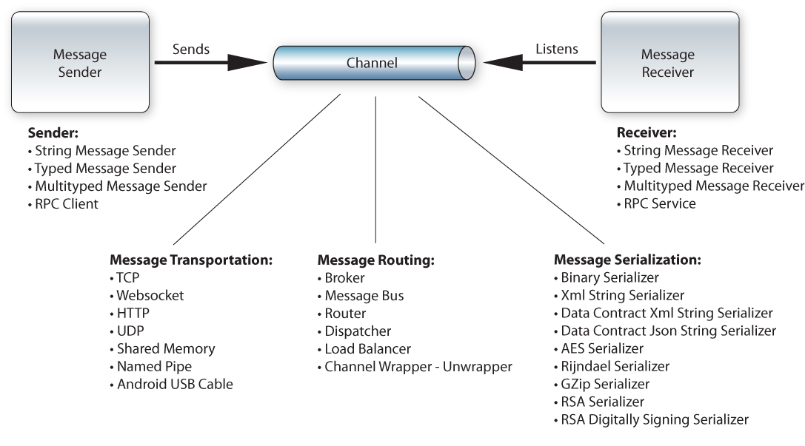

See: Description
| Package | Description |
|---|---|
| eneter.messaging.dataprocessing.messagequeueing |
Helper to queue and process messages with a working thread.
|
| eneter.messaging.dataprocessing.serializing |
Message serializers.
|
| eneter.messaging.dataprocessing.streaming |
Helper to write and read messages sfrom a stream.
|
| eneter.messaging.diagnostic |
Tracing.
|
| eneter.messaging.endpoints.rpc |
Remote Procedure Calls (RPC).
|
| eneter.messaging.endpoints.stringmessages |
Sending and receiving text messages.
|
| eneter.messaging.endpoints.typedmessages |
Sending and receiving typed messages.
|
| eneter.messaging.infrastructure.attachable |
Attaching and detaching communication channels.
|
| eneter.messaging.messagingsystems.androidusbcablemessagingsystem |
Communication with Android via the USB cable.
|
| eneter.messaging.messagingsystems.composites |
Extensions for messaging systems.
|
| eneter.messaging.messagingsystems.composites.authenticatedconnection |
Extension providing client authentication.
|
| eneter.messaging.messagingsystems.composites.bufferedmessagingcomposit |
Extension for automatic reconnect and buffering of sent messages in case the connection is not available.
|
| eneter.messaging.messagingsystems.composites.messagebus |
Extension for communication via the message bus.
|
| eneter.messaging.messagingsystems.composites.monitoredmessagingcomposit |
Extension providing monitoring the connection.
|
| eneter.messaging.messagingsystems.connectionprotocols |
Encoding/decoding the communication between output and input channels.
|
| eneter.messaging.messagingsystems.httpmessagingsystem |
Communication via HTTP.
|
| eneter.messaging.messagingsystems.messagingsystembase |
Messaging system interfaces.
|
| eneter.messaging.messagingsystems.synchronousmessagingsystem |
Synchronous communication within one process (like a synchronous local call).
|
| eneter.messaging.messagingsystems.tcpmessagingsystem |
Communication via TCP.
|
| eneter.messaging.messagingsystems.threadmessagingsystem |
Communication routing messages into one working thread.
|
| eneter.messaging.messagingsystems.threadpoolmessagingsystem |
Asynchronous communication using multiple threads.
|
| eneter.messaging.messagingsystems.udpmessagingsystem |
Communication via UDP.
|
| eneter.messaging.messagingsystems.websocketmessagingsystem |
Communication via Websockets.
|
| eneter.messaging.nodes.broker |
Publish-subscribe scenarios.
|
| eneter.messaging.nodes.channelwrapper |
Reducing communication via multiple channels into one channel.
|
| eneter.messaging.nodes.dispatcher |
Multiplying and forwarding of received messages.
|
| eneter.messaging.nodes.loadbalancer |
Distributing the workload across a farm of receivers.
|
| eneter.messaging.threading.dispatching |
Receiving messages and events according to specified thread mode.
|
| eneter.net.system |
Helpers used by Eneter and which need to be API.
|
Welcome to the Eneter.Messaging.Framework, the cross-platform message oriented middleware.
Eneter Messaging Framework is a lightweight framework for the interprocess communication. It is easy to use and it works across multiple platforms.
Supported Platforms
The framework is available for various platforms. Therefore you can use it for the communication between applications from the same platform
as well as for the communication between applications running on different platforms.
Communication across following platforms is supported:
Protocols
The framework for Java and Android supports following protocols and transportation mechanisms:
Message Serialization
Communicated messages are encoded by a serializer. To serialize/deserialize messages the framework for Java and Android supports:
The communication API is not bound to a particular protocol or encoding format, therefore your implementation stays same, does not matter what you use.
Sending-Receiving Messages
To implement the communication between applications the framework provides functionality to send and receive messages
as well as the communication using RPC (Remote Procedure Calls):
Routing Messages
It provides components to control routing of messages between applications:
Reliability
The communication across the network is typically less reliable as a local call inside the process. The network connection can be interrupted or receiving application can be temporarily unavailable. If your communication scenario requires to overcome these issues, the framework provides:
Security
The communication across the network is easy to observe and confidential data can be acquired by unauthorized persons. Therefore, you may want to protect your data:
Eneter Communication for Java and Android
